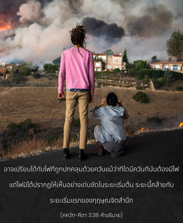

เสมือนดังควันที่ปกคลุมไฟ ฝุ่นที่ปกคลุมกระจกเงา หรือครรภ์ที่ปกคลุมทารก สิ่งมีชีวิตก็ถูกปกคลุมไปด้วยระดับต่างๆของราคะนี้เช่นเดียวกัน




มีสิ่งปกคลุมสิ่งมีชีวิตอยู่สามระดับที่ทำให้จิตสำนึกอันบริสุทธิ์ของเขามืดมน สิ่งปกคลุมนี้ คือ ราคะ ภายใต้ปรากฏการณ์ที่แตกต่างกัน ดังเช่น ควันที่อยู่ในไฟ ฝุ่นที่อยู่บนกระจก และครรภ์ที่ปกคลุมทารก เมื่อราคะเปรียบเทียบกับควัน จะเข้าใจได้ว่าประกายไฟของสิ่งมีชีวิตสามารถสำเหนียกได้เล็กน้อย หรือว่าขณะที่สิ่งมีชีวิตแสดงกฺฤษฺณจิตสำนึกออกมาเล็กน้อย อาจเปรียบได้กับไฟที่ถูกปกคลุมด้วยควัน แม้ว่าที่ใดมีควันที่นั่นต้องมีไฟ แต่ไฟมิได้ปรากฏให้เห็นอย่างเด่นชัดในระยะเริ่มต้น ระยะนี้คล้ายกับระยะเริ่มแรกของกฺฤษฺณจิตสำนึก ฝุ่นบนกระจกเปรียบเทียบกับวิธีการทำความสะอาดกระจกแห่งจิตใจด้วยวิธีการปฏิบัติธรรมต่างๆ วิธีที่ดีที่สุด คือ การสวดมนต์ภาวนาพระนามอันศักดิ์สิทธิ์ขององค์ภควานฺ ครรภ์ที่ปกคลุมทารกอุปมาให้เห็นถึงสภาวะที่ช่วยไม่ได้ เด็กในครรภ์ช่วยตัวเองไม่ได้ เพราะว่ายังไม่สามารถเคลื่อนไหวตัวเองได้ ระดับของสภาวะชีวิตเช่นนี้เปรียบเทียบได้กับต้นไม้ ต้นไม้ก็เป็นสิ่งมีชีวิตแต่ถูกจับให้มาอยู่ในสภาวะชีวิต ที่แสดงให้เห็นว่ามีราคะมากเสียจนเกือบจะไม่มีจิตสำนึกเหลืออยู่เลย ฝุ่นที่ปกคลุมกระจกเปรียบเทียบได้กับนกและสัตว์ต่างๆ และควันที่ปกคลุมไฟเปรียบเทียบได้กับมนุษย์ ในร่างมนุษย์สิ่งมีชีวิตอาจฟื้นฟูกฺฤษฺณจิตสำนึกได้เล็กน้อย และหากว่าพัฒนาต่อไปไฟแห่งชีวิตทิพย์อาจสามารถจุดให้เป็นประกายขึ้นมาในร่างชีวิตมนุษย์ได้ ด้วยการดูแลควันไฟอย่างระมัดระวังไฟอาจจะลุกโชติช่วงขึ้นมาได้ ฉะนั้น ชีวิตในร่างมนุษย์จึงเป็นโอกาสสำหรับสิ่งมีชีวิตที่จะหลบหนีจากพันธนาการแห่งความเป็นอยู่ทางวัตถุ ในร่างชีวิตมนุษย์เราสามารถกำราบศัตรูหรือราคะนี้ได้ด้วยการพัฒนากฺฤษฺณจิตสำนึก ภายใต้คำชี้แนะของผู้นำที่มีความสามารถ